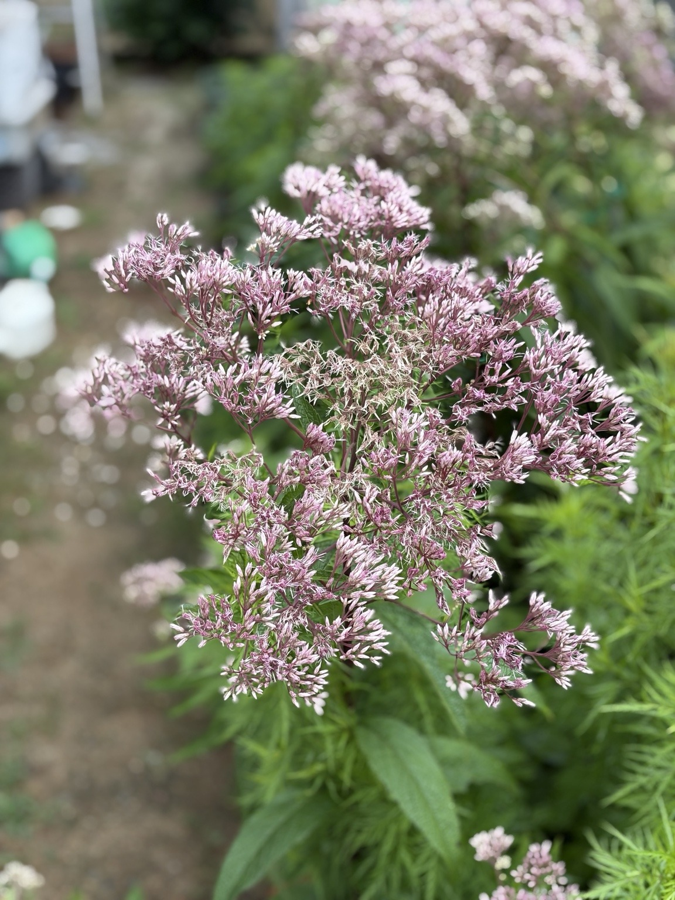
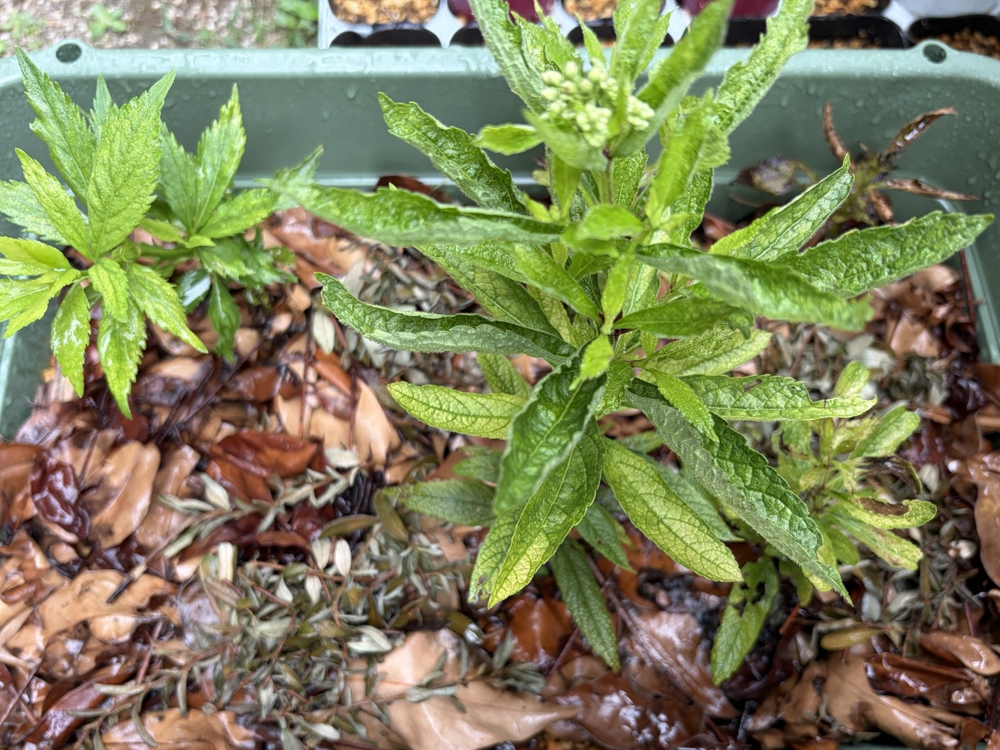

ベイビージョー｜わが家の生育記録
2026年8月2日｜花房全体で開花開始
花房全体で開花が始まり、外周から小花が少しずつ開花。挿し木株もプランター定植後約3週間で活着し、頂部に花芽を形成しました。
花房全体で開花開始
花房全体で開花が始まりました。外周から小花が開き始め、蜜源として機能し始めています。
ただし、花房全体が一斉に咲くのではなく、少しずつ時間差をつけながら開花します。そのため、この時点では中央部の小花は先に咲き終わり、外周部で開花が続いている様子が確認できました。

挿し木株は定植後約3週間で活着
- 挿し木時期：2026年春
- 発根：3号ポットで成功
- 植え替え：2026年7月12日（プランターへ定植）
- プランターへ植え替え後、約3週間で完全に活着。
- 草丈は約25～30cm。
- 頂部に花芽を形成し、順調に生殖成長へ移行。

この記事にいいね♡ 0